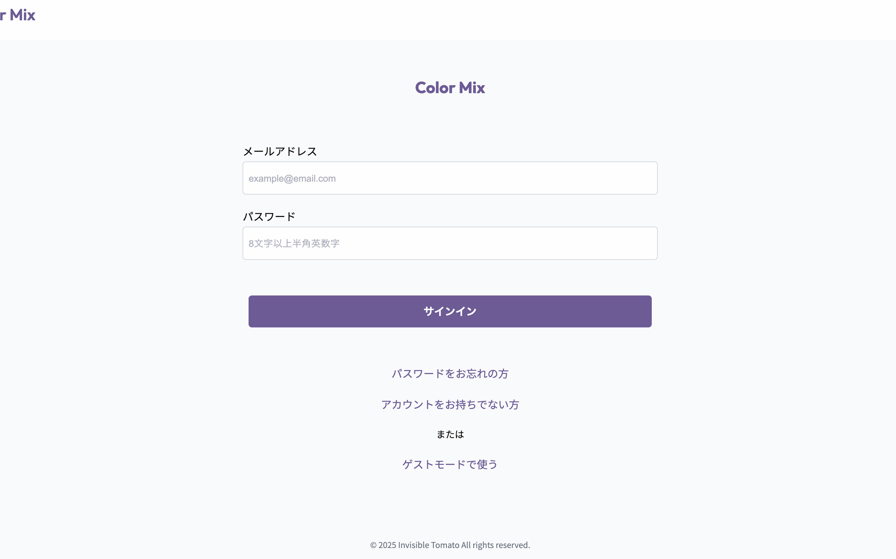
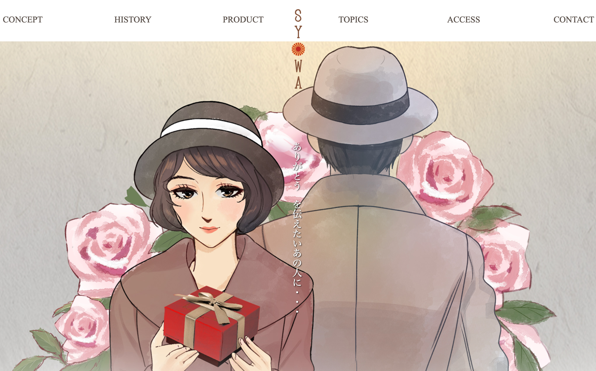
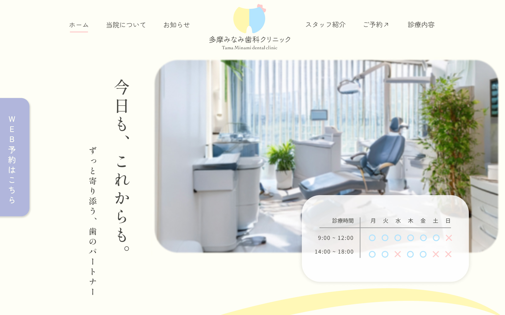

-

Color Mix
Next.js project
SoloProject
Creation time / 3 Weeks
-

TOKYOくらふとコーラ
Design / Coding
Branding / SoloProject
Creation time / 2 Weeks
-

SYOWAチョコレート
Coding
Branding / TeamProject
Creation time / 2 Weeks
-

多摩みなみ歯科クリニック
Design / Coding
Branding / TeamProject
Creation time / 2 Weeks